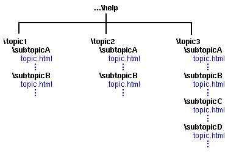
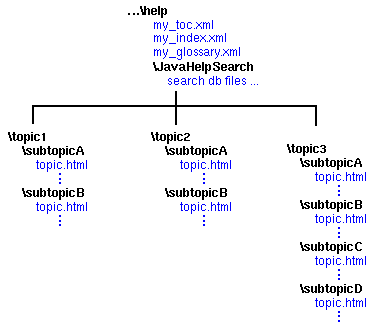
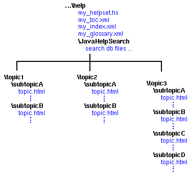

There are two primary things to consider when you set up your help projects:
The JavaHelp system is file-based - topics are contained in
files that are displayed in the help viewer one file at a time. It is a good
idea to group related topics together to keep them organized and to make it
as easy as possible to link the topics together.
| The JavaHelp system uses URLs. A URL can resolve to the contents of a file in a file system, a file on the web, or a portion of a JAR file, or it can even be generated dynamically by a server. |
You might also consider organizing topics to make it easy to package them into a compressed JAR file for delivery to your users.
For both these reasons, it is usually best to organize your topics in a folder hierarchy that you can "tear off" and place in the JAR file.
The following diagram shows such a hierarchy:

The destination of a link to another topic in the helpst should be specified relative to the file that contains the link. The following is an example of such a relative link:
<A HREF="../subtopicB/topic.html">new topic</A>Do not specify links to other topics by using an absolute link. For example, the following link uses a full path name to the destination of the link:
<A HREF="C:/product/help/subtopicB/topic.html">new topic</A>
Only relative links remain valid when the topic hierarchy is packaged into a JAR file and then installed on the user's computer.
All files in a JavaHelp system are specified as URLs, which use the forward slash ("/") as the separator between elements (files) in a hierarchy. Although in some cases a backslash ("\") works on Windows platforms, if files that contain such references are installed on a different platform, the references no longer work.
In addition to the topic files, the help information includes metadata files that contain information about the help system. Where you locate these metadata files can affect how you package, deliver, and update the help information for your users.
In JavaHelp systems there are two kinds of metadata:
Navigational data files contain information that is used by the JavaHelp system navigators. The standard JavaHelp system navigators are:
Each of these navigators has a metadata file associated with it that contains navigational data. These metadata files should be located in close proximity to the topic files to make it easier to package them into JAR files with the topic files for delivery to customers. The following diagram displays an example.

Helpset data is information that the JavaHelp system needs to run your help system. It is contained in two files:
When the JavaHelp system is activated by your application, the first thing it does is read the helpset file. The helpset file contains all the information needed to run the help system. As you can imagine, your application must be able to find the helpset file after the product is installed on your user's system.
The helpset file contains the location of the map file and in most cases, the map file is read when the helpset is initialized. The map file is used to associate topic IDs with URLs (paths to HTML topic files).
The following diagram shows how a help hierarchy might be set up to include the helpset file and map file.

You can package your help information into JAR files for delivery to your users. Usually, you package the helpset file and map file in the JAR file along with the topic files and navigational files.
On the JavaTM 2 Platform, the jar:
protocol makes various packaging options available. Including the helpset and
map files in or or excluding them from the JAR file has an effect on how you
deliver the help information and how you can later update it. The following
two sections describe some of the issues to consider when making that decision.
Under some installation conditions, the helpset file could be excluded from the JAR file, while the map file is included. The following diagram illustrates this arrangement:

Note that the map file is referenced with the jar: protocol.
The helpset file is the only help system file referenced explicitly by the application. The JavaHelp system derives all information about the help system from that file. If the helpset file is outside the JAR file, the installation program can update the helpset file so the JAR files can be installed anywhere in the user's file system. This is not possible if the helpset file is included in the JAR file.
Another advantage of locating the helpset file outside the JAR file is that it can be updated independently of the rest of the helpset. For example, additional help information can be added to the user's help system by adding more JAR files and updating the helpset file.
Excluding the map file from the JAR file is possible, but is usually not useful.

If the map file is located outside of the JAR file, all URLs
in the map must use the jar: protocol. For
example:
jar:file:/c:/product/help/Ajar.jar!/File1.html
 See also:
See also: